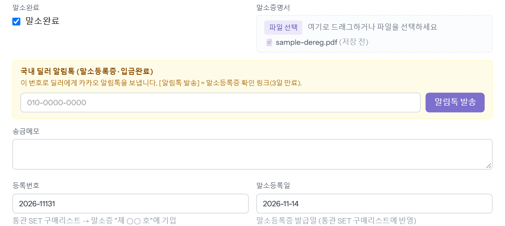
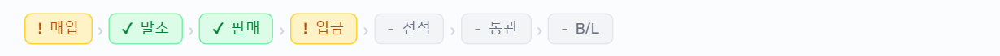
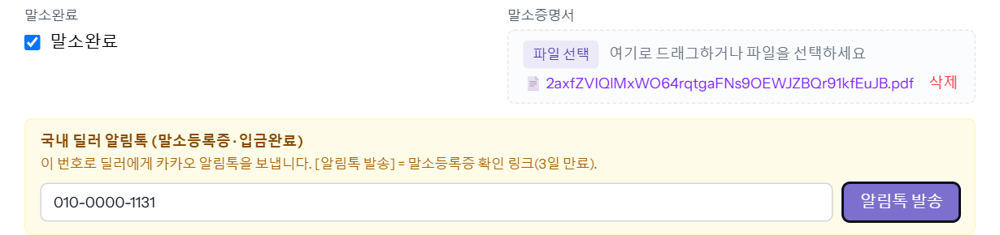

매입한 차를 말소하고, 말소등록증을 올린 뒤 차를 판 국내 딜러에게 카카오 알림톡으로 말소등록증 링크를 보내는 단계입니다. 매입 탭 아래쪽에서 합니다. 세금계산서 발행 요청도 같은 칸의 번호로 보냅니다.
① 말소 기록과 말소증 올리기
1단계
매입 탭 → 「말소완료」 체크 · 말소증명서 · 등록번호 · 말소등록일
- 말소완료 — 체크합니다.
- 말소증명서 — 말소등록증 파일을 끌어다 놓거나 [파일 선택]. 「(저장 전)」으로 보입니다.
- 등록번호 — 말소증의 「제 ○○ 호」. 통관 SET 구매리스트에 들어갑니다.
- 말소등록일 — 말소등록증 발급일. 8자리(20261114)로 쳐도 됩니다.

[수정 저장]을 누르면 진행 줄의 「말소」에 초록 체크가 붙습니다.

② 딜러에게 말소등록증 보내기
2단계
「국내 딜러 알림톡」 칸에 딜러 휴대폰 번호 → [알림톡 발송]
저장된 말소증이 링크로 보이면 보낼 수 있습니다. 딜러 휴대폰 번호를 넣고 [알림톡 발송]을 누릅니다. 번호는 [수정 저장] 때 같이 저장되고, 매입대금 입금완료 알림도 이 번호로 갑니다.

딜러가 받는 알림톡:
[말소등록증 발급 안내] 00가1131
구매하신 차량의 자동차 말소등록증이 발급되었습니다.
▶ 차량번호: 00가1131
아래 링크에서 말소등록증을 확인·다운로드하실 수 있습니다.
(확인 링크)
(보안을 위해 링크는 3일 후 만료됩니다.)
승인된 문안에 예시 차량 값을 넣은 것입니다. 「(확인 링크)」 자리에 3일 뒤 만료되는 실제 주소가 들어갑니다.
③ 세금계산서 발행 요청
3단계
같은 칸의 [세금계산서 발행 요청]
회사에서 이 알림톡이 승인돼 켜져 있으면 [알림톡 발송] 옆에 버튼이 하나 더 보입니다(사진은 없습니다). 누르면 확인 창이 뜨고, 딜러에게 사업자등록증 링크(7일)와 함께 아래 알림톡이 갑니다. 재무 · 수출통관 · 관리 이상이 보낼 수 있습니다.
[세금계산서 발행 요청] 00가1131
차량 매입 대금에 대한 세금계산서 발행을 요청드립니다.
▶ 차량번호: 00가1131
▶ 공급받는 자: (우리 회사명)
▶ 사업자등록번호: (우리 사업자번호)
아래 링크에서 사업자등록증을 확인·다운로드하실 수 있습니다.
(확인 링크)
(보안을 위해 링크는 7일 후 만료됩니다.)
승인된 문안에 예시 차량 값을 넣은 것입니다. 회사명·사업자번호는 보내는 회사 것으로 들어갑니다.
알아 둘 것
- 말소 칸(체크·말소증명서)과 [알림톡 발송]은 수출통관 · 영업 · 관리 이상에게 보입니다. 재무 계정은 딜러 번호 칸만 보입니다.
- 말소증을 저장하기 전에 [알림톡 발송]을 누르면 「먼저 말소등록증을 업로드·저장해야 합니다.」가 뜹니다.
- 딜러 번호가 휴대폰 형식(010 은 11자리)이 아니면 칸 아래에 바로 알려 주고, 발송 버튼은 경고창을 띄우며 보내지 않습니다.
- 말소를 저장하려면 기본정보 탭의 소유자 주민(법인)등록번호가 있어야 합니다. 없으면 「말소 처리에는 소유자 주민(법인)등록번호가 필수입니다」가 뜹니다.
- 말소를 안 하면 판매가 끝난 차라도 수출 탭(반입지)을 저장할 수 없습니다 — 「말소 처리를 완료해야 수출 진입이 가능합니다」.
- 매입 대금을 다 치렀는데 말소가 안 된 차는 「말소 필요」로 모여 담당자에게 알림이 갑니다.